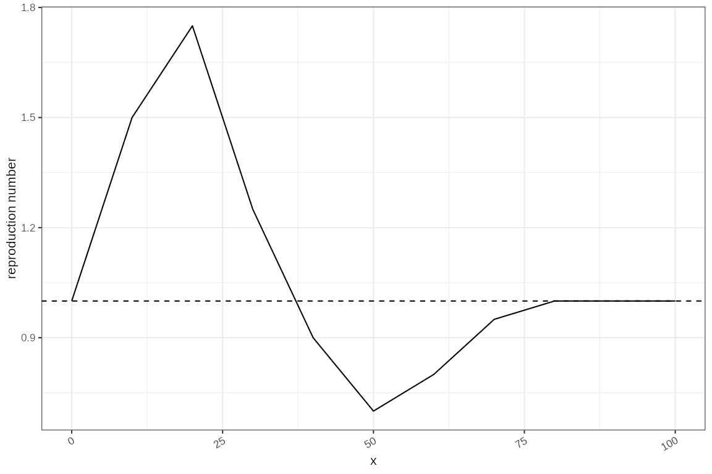
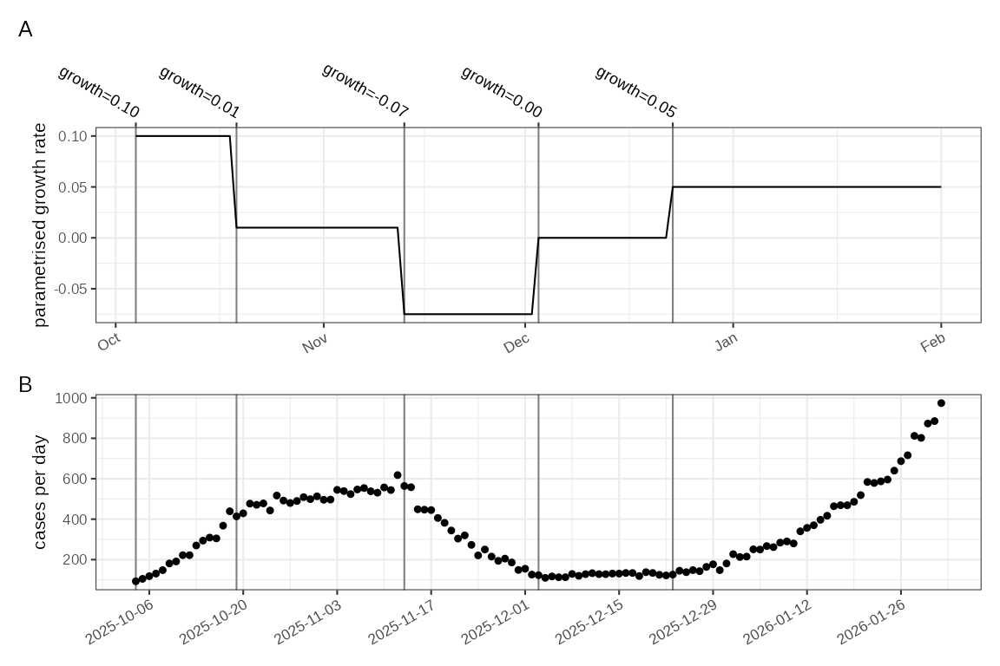
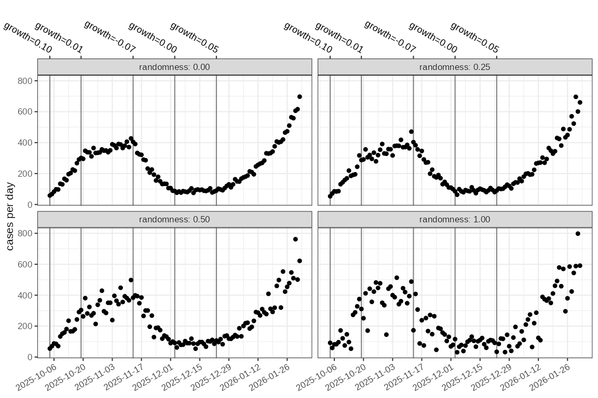
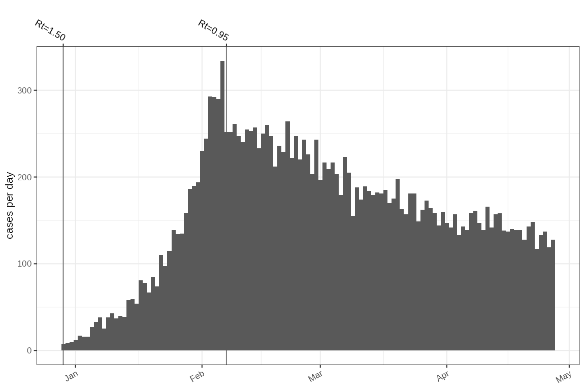
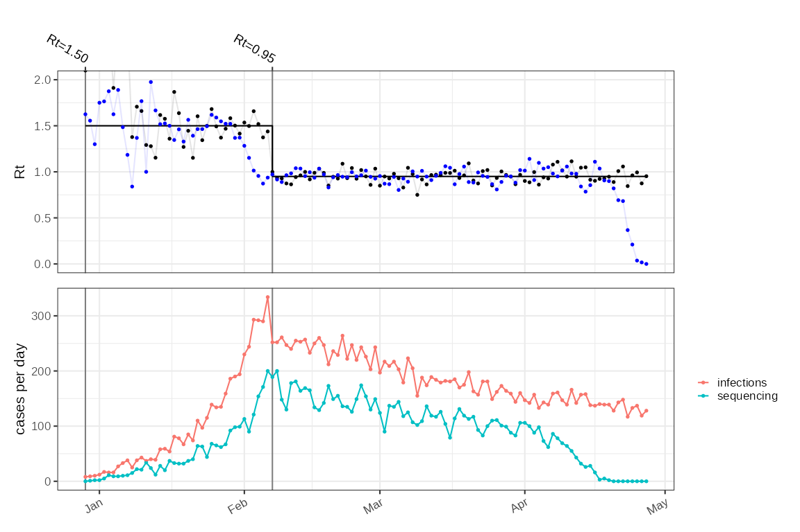

Simulations and test harnesses
Source:vignettes/simulation-test-models.Rmd
simulation-test-models.RmdBackground
Testing the inference of
and growth rate estimates needs a ground truth, which is missing in real
outbreaks as infection events cannot be truly observed. Testing accuracy
of estimates of
for example needs one or more simulations of outbreaks that have known
parametrisation. ggoutbreak contains some functions to
generate synthetic datasets which exhibit some of the complexities we
observed in the COVID-19 pandemic. There are two levels at which the
simulations work, aggregate counts or case line list simulations.
knitr::opts_chunk$set(echo = TRUE)
here::i_am("vignettes/simulation-test-models.Rmd")## here() starts at /home/vp22681/Dropbox/Git/ggoutbreak
source(here::here("vignettes/vignette-utils.R"))
library(ggoutbreak)
library(patchwork)
plot_changes = function(sim, name, max_y = NA, mapping = ggplot2::aes(), case=FALSE, fn = attr(sim,"fn"), changes = NULL, ...) {
if (!is.null(changes)) {
col = intersect(c("growth","R"),colnames(changes))
events = changes %>% dplyr::transmute(
start = as.Date(as.time_period(t, unit=time_unit)),
end = NA,
label = sprintf(paste0(col,"=%1.2f"),!!rlang::sym(col))
)
}
else
events = attr(sim,"events")
force(fn)
if ("statistic" %in% colnames(sim)) sim = sim %>% dplyr::filter(statistic == "infections")
ggplot2::ggplot(mapping=mapping)+
{if (is.null(events)) NULL else geom_events(events=events)}+
{if (is.null(fn)) NULL else ggplot2::geom_function(fun = ~ fn(t=as.time_period(.x, sim$time)), xlim=as.Date(range(sim$time)), n = length(sim$time))}+
{if (!"rt.weighted" %in% colnames(sim)) NULL else ggplot2::geom_step(data = sim, mapping=ggplot2::aes(x=as.Date(time), y=rt.weighted))}+
{if (!"rt.inst" %in% colnames(sim)) NULL else list(
ggplot2::geom_point(data = sim, mapping=ggplot2::aes(x=as.Date(time), y=rt.inst),size=0.5),
ggplot2::geom_line(data = sim, mapping=ggplot2::aes(x=as.Date(time), y=rt.inst),alpha=0.1)
)}+
{if (!case || !"rt.case" %in% colnames(sim)) NULL else list(
ggplot2::geom_point(data = sim, mapping=ggplot2::aes(x=as.Date(time), y=rt.case), colour="blue",size=0.5),
ggplot2::geom_line(data = sim, mapping=ggplot2::aes(x=as.Date(time), y=rt.case), colour="blue",alpha=0.1)
)}+
ggplot2::ylab(name)+ggplot2::xlab(NULL)+
ggplot2::coord_cartesian(ylim=c(NA,max_y))
}ggoutbreak includes a set of simulations that can be
used to generate test data with known parameters. These can be used to
validate the output of model parameter estimates, calculated from
simulated data for which we have gold standard values for those
parameters. Simulations are both at an aggregate level generating count
data, or at an individual level generating line lists.
The parameters implemented so far are as follows:
- Importation rate
- Reproduction number
- Growth rate
- Infectivity profile (generation time or the time delay of infectee infection from time of infector infection)
- Case ascertainment rate
- Probability of symptoms given infection
- Time delay of symptom onset from time of infection
- Probability of hospital admission given infection
- Time delay of hospital admission from time of infection
- Probability of death given infection
- Time delay of death from time of infection
- Probability of testing given infection (or given symptoms)
- Time delay of test sampling from time of infection (or symptoms)
- Time delay of test result from time of test sampling
Depending on the model some of these may be specified in different ways. Different delays and rates of observation can be added ad-hoc and the simulations can be stratified by different classes. In some simulations this can be propagated using an equivalent to a contact matrix.
Specifying time varying parameters
The simulation framework is highly configurable, and a key part of
this is specifying parameters that vary over time, or have some random
or non random day to day variation. Most simulation parameters must be
given as a time varying function, but other parameters are often
available. ggoutbreak includes various ways of generating
these functions, and simulation configuration options that expect a
function are identified by the fn_... prefix, for example
fn_p_symptomatic.
Functions are evaluated in the context of the simulation data frame,
as it is being built. These will always have a time and a count column,
and may have other columns too. The evaluation happens internally but
here we use the .ts_evaluate function to demonstrate the
results.
demo = tibble::tibble(
time = 0:9,
class = rep(c("one","two"),5),
flag = c(rep(TRUE,5),rep(FALSE,5))
)A static value can be supplied as a purrr style lambda.
.ts_evaluate( ~ 0.5, demo )## [1] 0.5A time varying function can be supplied as a purrr style lambda where
the first parameter is the time column of the
demo dataframe
.ts_evaluate( ~ ifelse(.x < 5, 2, 0.5), demo )## [1] 2.0 2.0 2.0 2.0 2.0 0.5 0.5 0.5 0.5 0.5An alternative syntax uses an anonymous function with named
parameters. The time column is always shortened to t. This
format can be used to key off other variables to allow a time varying,
and class specific parameter to be returned
.ts_evaluate( \(t, class) dplyr::case_when(
class == "one" ~ "variant 1 R_t value",
class == "two" ~ "variant 2 R_t value"
), demo )## [1] "variant 1 R_t value" "variant 2 R_t value" "variant 1 R_t value"
## [4] "variant 2 R_t value" "variant 1 R_t value" "variant 2 R_t value"
## [7] "variant 1 R_t value" "variant 2 R_t value" "variant 1 R_t value"
## [10] "variant 2 R_t value"If you don’t know what columns are available providing an empty or otherwise incorrect function results in the valid parameter names being displayed in the error message:
try(.ts_evaluate( \() {} , demo ))## Error : Function must define at least one parameter, available values are: t, class, flagStep and linear functions
A common need is to set a number of fixed levels, or fixed knots and have the function interpolate between them. The step function might be used to parametrise in the event of a lock-down for example.
To make this simple most simulation functions will take a
changes dataframe that defines the time point and the new
value of, either the reproduction number or the growth rate at the time
point. These can be used as parametrisation for the reproduction
number.
changes = tibble::tibble(
t = c(0,20,40,60,80),
growth = c(0.1,0,-0.1,0,0.1)
)
fn = cfg_step_fn(changes)
ggplot2::ggplot()+ggplot2::geom_function(fun = fn, xlim = c(0,100))+ggplot2::ylab("growth rate")cfg_linear_fn produces a very similar effect with less
abrupt changes in
and changes occurring such that the value at the knot is correct.
changes = tibble::tibble(
t = c(0,10,20,30,40,50,60,70,80),
R = c(1,1.5,1.75,1.25,0.9,0.7,0.8,0.95,1)
)
fn = cfg_linear_fn(changes)
ggplot2::ggplot()+
ggplot2::geom_function(fun = fn, xlim = c(0,100))+ggplot2::ylab("reproduction number")+
ggplot2::geom_hline(yintercept=1,linetype="dashed")
Random functions
For some applications (e.g. ascertainment, importation) it might
useful to have a value that includes some random noise, but with the an
expected value of the average. This is easiest with a purrr
style lambda.
# A random normally distributed value with mean 5 and SD 1
# `.x` here will be interpreted as time as the first parameter, and in this
# case is only used to size the returned random gaussian.
.ts_evaluate(~ stats::rnorm(.x,5,1), demo)## [1] 3.599956 5.255317 2.562736 4.994429 5.621553 6.148412 3.178182 4.752675
## [9] 4.755800 4.717295For convenience ggoutbreak includes some RNGs that are
parametrised by mean and a dispersion parameter.
# A random Bernoulli parametrised by probability.
.ts_evaluate(~ rbern(.x, p = 0.5), demo)## [1] TRUE FALSE FALSE TRUE FALSE FALSE TRUE FALSE FALSE FALSE
# A beta distributed quantity parametrised by probability and dispersion (1-high to 0-none)
.ts_evaluate(~ rbeta2(.x, prob = 0.7, kappa = 0.1), demo)## [1] 0.7506903 0.7129819 0.7013073 0.6861331 0.7230630 0.6881060 0.6908378
## [8] 0.7337567 0.7024199 0.7236393
# A log normal parametrised by mean and SD on the true scale
.ts_evaluate(~ rlnorm2(.x, mean = 5, sd =1), demo)## [1] 4.887440 4.162386 3.633908 5.900688 5.077301 5.145320 6.762271 5.012906
## [9] 4.774506 3.358685
# A gamma parametrised by mean and SD on the true scale
.ts_evaluate(~ rgamma2(.x, mean = 5, sd =1), demo)## [1] 4.627468 5.050369 4.614360 4.287724 6.389703 4.144172 8.007341 4.946172
## [9] 5.488590 5.017705These functions can be combined with other logic to make a time dependent random number, in this case the first 5 random gammas are drawn from a distribution with mean 1 and SD 1 and the last 5 from mean 6 and SD 1:
# A random number from a gamma distribution parametrised by mean and SD on the true scale
# where the mean is a time varying value. Again here `.x` is the time and it is
# being used to define the number of returned value sand the mean of these values
.ts_evaluate(~ rgamma2(.x, mean = ifelse(.x < 5,1,6), sd =1), demo)## [1] 0.9002344 0.1013501 0.5136526 0.5211211 0.9643644 3.8738828 5.9171433
## [8] 6.6902884 6.2615691 6.0851481Although time dependence is the most likely scenario, any simulation component can be used to control gamma and beta distributed quantities. This allows for configuring variant specific hospitalisation rates, or delays for example.
hospitalisation_prob_fn = cfg_beta_prob_rng(
probability_fn = \(variant) ifelse(variant=="alpha", 0.2, 0.02),
kappa_fn = ~ 0.1
)
demo = tibble::tibble(
t = 1:200,
variant = c(rep("wildtype",100),rep("alpha", 100))
) %>% dplyr::mutate(
value = .ts_evaluate(hospitalisation_prob_fn, .)
)
ggplot2::ggplot(demo, ggplot2::aes(x=variant,y=value))+ggplot2::geom_point(position = "jitter")+
ggplot2::ylab("probability hospitalisation")
Delay distributions and delay RNGs
A key parameter is the generation interval or infectivity profile that defines the delay between infection of infector and infectee in a transmission chain. Other delays such as infection to symptoms, or infection to admission also need to be parametrised. This is done using a empirical probability distribution as described in this vignette (referred to as ‘IP distributions’). In general IP distributions are either used for a convolution of summary count data, to simulate the effect of delay on an aggregate measure, or for random sampling to generate a delay for each individual in a line list. There are a couple of ways of constructing these for a simulation:
gamma_ip = make_gamma_ip(median_of_mean = 5, median_of_sd = 1)
emp_ip = make_empirical_ip(omega = c(0,0,0,1,1,2,3,3,2,1,0,0))
p1=gamma_ip %>% plot_ip() + ggplot2::facet_wrap(~"gamma")
p2=emp_ip %>% plot_ip() + ggplot2::facet_wrap(~"empirical")
p1+p2+patchwork::plot_layout(nrow=1)#,axes = "collect")
The IP distributions are used directly for convolution in aggregate
simulations. For line list simulations we want a random sample to apply
to individuals. For gamma based IP distributions the rgamma
or rgamma2 functions could be used directly. For empirical
distributions we can generate random numbers
emp_sample_fn = cfg_ip_sampler_rng(emp_ip)
tmp = tibble::tibble(
serial_interval = emp_sample_fn(2000)
)
p3 = p2 %above% ggplot2::geom_histogram(data=tmp,mapping=ggplot2::aes(x=serial_interval, y=ggplot2::after_stat(density)),
breaks = c(0,seq(0.5,12)),fill="grey80",colour="grey40")
p3
These IP delay distributions may themselves change over time, or change as a result of other characteristics of the simulation. This is difficult to demo outside of the simulation, and we will give some examples later. In principle though a time varying function for selecting one of 2 IP delays might look like this:
# We start by defining a time varying function for the mean of a gamma
delay_mean_fn = cfg_linear_fn(tibble::tribble(
~t , ~delay,
0, 3, # 3 day delays initially,
4, 3, # Until day 4. Between day 4 and 10 delays improving
10, 1 # by day 10 delays steady at 1 day
))
# We wrap this in a a function to calculate a IP for each time point
delay_fn = function(t) purrr::map( delay_mean_fn(t), function(mean) {
make_gamma_ip(median_of_mean = mean, median_of_sd = sqrt(mean))
})
# Within the simulation this delay function will be evaluated for each day
# here we do it manually
times = 0:14
delay_t = delay_fn(t=times)
# this is a list of IP distributions.
tibble::tibble(ip = delay_t, t=times) %>% tidyr::unnest(ip) %>% dplyr::glimpse() %>%
ggplot2::ggplot()+
ggplot2::geom_rect(ggplot2::aes(xmin=t,xmax=t+1,ymin=a0,ymax=a1,fill = probability))+
ggplot2::xlab("time")+ggplot2::ylab("delay")## Rows: 158
## Columns: 6
## $ tau <int> 0, 1, 2, 3, 4, 5, 6, 7, 8, 9, 10, 11, 12, 0, 1, 2, 3, 4, 5…
## $ a0 <dbl> 0.0, 0.5, 1.5, 2.5, 3.5, 4.5, 5.5, 6.5, 7.5, 8.5, 9.5, 10.…
## $ a1 <dbl> 0.5, 1.5, 2.5, 3.5, 4.5, 5.5, 6.5, 7.5, 8.5, 9.5, 10.5, 11…
## $ probability <dbl> 0.0143876780, 0.1767654915, 0.2650337147, 0.2229659170, 0.…
## $ boot <int> 1, 1, 1, 1, 1, 1, 1, 1, 1, 1, 1, 1, 1, 1, 1, 1, 1, 1, 1, 1…
## $ t <int> 0, 0, 0, 0, 0, 0, 0, 0, 0, 0, 0, 0, 0, 1, 1, 1, 1, 1, 1, 1…
For time varying delays in individual based models things are a little simpler. We create RNG that has a mean for every individual in the simulation.
delay_mean_fn = cfg_linear_fn(tibble::tribble(
~t , ~delay,
0, 3, # 3 day delays initially,
4, 3, # Until day 4. Between day 4 and 10 delays improving
10, 1 # by day 10 delays steady at 1 day
))
delay_rng = function(t) { rgamma2(t, delay_mean_fn(t)) }
times = rep(0:14,1000)
delay = delay_rng(t=times)
tibble::tibble(delay = delay, t=times) %>%
ggplot2::ggplot()+ggplot2::geom_boxplot(ggplot2::aes(x=as.factor(t),y=delay),outliers = FALSE)+
ggplot2::xlab("time")+ggplot2::ylab("delay")These approaches can be applied to any delay distribution, other than time to infection such as time to hospitalisation, and so these can be made to vary on other variables in the simulation such as variant class or potentially patient age.
Periodic functions
A periodic function is most obviously useful to generate seasonal forcing:
# A simple to interpret and easy to make integrate to 0, so that growth remains
# bounded.
growth_rate_fn = \(t) dplyr::case_when(
t %% 365 < 40 ~ 0.1,
t %% 365 < 80 ~ -0.1,
TRUE ~ 0)
ggplot2::ggplot()+ggplot2::geom_function(fun = growth_rate_fn, xlim = c(0,365*2))+ggplot2::ylab("growth rate")
Other important uses for periodic functions is to simulate the patterns of within week variation. This is often seen in testing data as a result of delays to being tested, or to test processing over the weekend. To model this we have two variants of weekly periodicity that use a gamma distribution for the delay. One can be used represent the delay distribution for convolution in count based simulations and another for random sampling in individual based simulations.
gamma_means = c(1,1,1,1,4,3,2)
delay_fn = cfg_weekly_ip_fn(mean=gamma_means)
# delay_fn can be used as the parameter for a delay distribution convolution
# format_ip takes a probability based delay distribution and gives us a summary
# the mean, sd, etc.
.ts_evaluate(delay_fn, tibble::tibble(t=1:7)) %>%
purrr::map_chr(format_ip)## [1] "mean: 1.06; sd: 1.01" "mean: 1.06; sd: 1.01" "mean: 1.06; sd: 1.01"
## [4] "mean: 1.06; sd: 1.01" "mean: 4; sd: 2.04" "mean: 3; sd: 1.77"
## [7] "mean: 2.02; sd: 1.44"
# for line list functions a RNG with weekly periodicity generates samples
# of the interval that is consistent with the parameters passed to
# `cfg_weekly_gamma_rng`
delay_rng = cfg_weekly_gamma_rng(mean=gamma_means)
tibble::tibble(t=rep(1:7,100)) %>%
dplyr::mutate(sample = .ts_evaluate(delay_rng, .)) %>%
dplyr::group_by(t) %>%
dplyr::summarise(
mean = mean(sample),
sd = stats::sd(sample)
) %>%
dplyr::mutate(
expected_mean = gamma_means,
expected_sd = sqrt(gamma_means)
)## # A tibble: 7 × 5
## t mean sd expected_mean expected_sd
## <int> <dbl> <dbl> <dbl> <dbl>
## 1 1 1.07 1.01 1 1
## 2 2 0.973 0.926 1 1
## 3 3 0.845 0.767 1 1
## 4 4 0.842 0.823 1 1
## 5 5 4.02 1.81 4 2
## 6 6 3.13 1.87 3 1.73
## 7 7 2.07 1.43 2 1.41We will demonstrate this in a simulation later.
Simulation cookbook
Count based simulations
Count based models are typically based around a poisson process where the expected number of cases per day is expressed as a function of imports and growth, either in terms of the exponential growth rate, or a combination of the reproduction number and infectivity profile (generation time).
Basic growth rate possion model with ascertainment noise.
Daily count simulations are based around defined incidence rates, which can be expressed in terms of a time dependent growth rate and an time dependent importation rate. From this a incidence time series can be generated using a poisson or negative binomial distribution. We can also define a simulation in terms of time dependent reproduction number, time dependent infectivity profile, and a time dependent importation rate.
withr::with_options(list('day_zero'=Sys.Date()),{
# define a growth rate time series
changes = tibble::tibble(
t = c(0,15,40,60,80),
growth = c(0.1,0.01,-0.075,0,0.05)
)
sim = sim_poisson_model(
changes = changes,
max_time = 120,
time_unit = "1 day"
)
p1 = plot_changes(sim, "parametrised growth rate", date_breaks = "2 weeks")
p2 = ggoutbreak::plot_counts(sim, events = attr(sim,"events"), date_breaks = "2 weeks")
p1+p2+patchwork::plot_annotation(tag_levels = "A")+plot_layout(ncol=1,axes = "collect")
})## interfacer: development mode active (local function).
## No `start_date` (or `anchor`) specified. Using default (N.b. set `options('day_zero'=XXX)` to change): 2019-12-29
##
## This message is displayed once every 8 hours.
This produces summary statistics only. With the growth rate and an infectivity profile, we can use the methods of Wallinga and Lipsitch to infer a theoretical value of , giving us a ground truth to validate estimates.
# COVID-19 generation time estimates from Ganyani et al 2020.
ip = make_gamma_ip(5.2, 3.78, 6.78, 1.72, 0.91, 3.93, epiestim_sampler=FALSE, epiestim_compat=FALSE)
fn_Rt = changes %>%
dplyr::transmute(
t,
R_t = wallinga_lipsitch(growth, y = ip$probability, a0 = ip$a0, a1 = ip$a1)) %>%
cfg_step_fn()
plot_changes(sim, "parametrised reproduction number", fn=fn_Rt, date_breaks = "2 weeks") Simulated noise can be introduced by scaling the incidence rate by a
random ascertainment rate, which can vary over time. The randomness
factor (kappa - a measure of dispersion) is calibrated to
range from 0 (none) to 1 (maximum).
sim2 = dplyr::bind_rows(lapply(c(0,0.25,0.5,1), function(k)
sim %>%
sim_apply_ascertainment(
fn_asc = ~ rbeta2(.x, prob = 0.7, kappa = k)
) %>%
dplyr::mutate(ascertainment_noise = k)
)) %>%
dplyr::group_by(ascertainment_noise)
ggoutbreak::plot_counts(sim2, events = attr(sim,"events"), date_breaks = "2 weeks")+
ggplot2::facet_wrap(~sprintf("randomness: %1.2f",ascertainment_noise),ncol=2)
# Noise introduced by random day to day ascertainment variation:In this example we select a time varying delay distribution, reflecting test processing delays, due to setting up testing and then a public holiday. These can be applied as a time-varying convolution filter on summary case count simulations to simulate the effect that changing delay distributions has on aggregate case counts. For example dynamic delays in test processing can result in slow down and catch up anomalies.
ip_mean_fn = cfg_linear_fn(tibble::tribble(
~t , ~delay,
0, 3, # 3 day avg delays initially
10, 1, # by day 10 delays decreased to 1
25, 1, # remain steady until day 25
26, 3, # public holiday on day 26
27, 3, # and day 27
28, 1 # returning to normal on day 28
))
p_detection_fn = cfg_linear_fn(tibble::tribble(
~t , ~p,
0, 0.1, # initial low probability of detection
10, 0.7,
90, 0.7,
120,0.3
))
delay_detection_fn = ~ make_gamma_ip(median_of_mean = ip_mean_fn(.x))
sim3 = sim %>% sim_convolution(
p_fn = p_detection_fn,
delay_fn = delay_detection_fn,
output = "detected"
) %>% sim_delayed_observation(
input = "detected",
delay_fn = ~ make_gamma_ip(7,median_of_sd = 10)
)
p1=plot_changes(sim3,name = "delays (days)", fn = ip_mean_fn)+ggplot2::ylim(0,NA)
p2=plot_changes(sim3,name = "detection", fn = p_detection_fn)+ggplot2::ylim(0,1)
p3=plot_counts(sim3,events = attr(sim3,"events"),mapping=ggplot2::aes(colour=statistic))+ggplot2::geom_line()
p1+p2+p3+patchwork::plot_layout(ncol=1,heights=c(1,1,2),axes = "collect")
Seasonal outbreak using a reproduction number
We can simulate a seasonal outbreak by providing a periodic growth rate or as a parameter to a simple poisson model. In this example we also simulated a default set of delays which keying off an infection event, generate a delayed set of symptom observations, test samples, results, hospitalisations and death time series.
seasonal_rt_fn = \(t) dplyr::case_when(
t %% 365 < 20 ~ 2.5,
t %% 365 < 60 ~ 0.6,
TRUE ~ 1
)
seasonal_imports = \(t) ifelse(
t %% 365 < 5, 5, 0
)
seasonal_sim = sim_poisson_Rt_model(
max_time = 365*3,
fn_Rt = seasonal_rt_fn,
fn_imports = seasonal_imports,
fn_ip = ~ make_gamma_ip(6)
)
#profvis::profvis(
system.time({
seasonal_sim = seasonal_sim %>% sim_apply_delay()
})## user system elapsed
## 13.801 0.005 13.813
#)
p1=plot_changes(
seasonal_sim,
name = "Rt",
fn = seasonal_rt_fn,
max_y = 3)
p2=plot_counts(
seasonal_sim,
events = attr(seasonal_sim,"events"),
mapping=ggplot2::aes(colour=statistic),size=0.25)+
ggplot2::geom_line()+
ggplot2::facet_wrap(~ statistic,ncol=1,scales = "free_y")
p1+p2+patchwork::plot_layout(ncol=1,axes = "collect",heights=c(1,10))
Line list simulations
When we want to investigate estimates of delays such as the serial interval, or rates such as the case fatality rate, it is necessary to simulate individuals and their interaction. To do this we use a branching process model parametrised directly with . The time varying defines the expected number of onward infections for each individual which is sampled using a poisson or negative binomial distribution. Each infectee is then given a time of infection depending on a specified infectivity profile, and the times of further events such as symptom onset, hospitalisation, death, test sampling, and test results can be assigned, following known event probabilities and delay distributions. Summary counts of all these events indexed on the time of event, demonstrate well known biases, such as right truncation. This simulation is directly parametrised with a theoretical value; summary of the network edges gives us a realised case reproduction number which is specific for an individual simulation, and the force of infection gives us a instantaneous reproduction number estimate for the individual simulation. From the parametrised infectivity profile we can again use the methods of Wallinga and Lipsitch to solve for a theoretical growth rate.
Basic outbreak with delays and censoring
A minimal outbreak simulation using a branching process model takes a time varying function for the reproduction number and a time varying function for the number of imported cases. This generates a set of infection events for the specified time period (staring at day 0).
# A simple outbreak
linelist = sim_branching_process(
fn_Rt = ~ ifelse(.x < 40, 1.5, 0.95),
max_time = 120,
seed = 100,
fn_imports = ~ ifelse(.x<10,8,0)
)## ................................complete
plot_cases(linelist, events = attr(linelist,"events"))+ggplot2::coord_cartesian()
From this set of infections we can add in a observations, based on the probability of observation and the delay of observation. Both of these are time varying functions, which can for example vary as a result of the day of the week. In this example we add a “sequencing” column set that describes when a sample was taken for genomic sequencing. This sampling is delayed slightly more on infections arising at the weekend.
linelist2 = linelist %>% sim_delay(
p_fn = ~ 0.6,
delay_fn = cfg_weekly_gamma_rng(c(3,3,3,3,3,3.5,3.5), sd=1),
output = "sequencing"
)
# The delay function results in additional columns prefixed by "sequencing"
# of reach individual.
linelist2 %>% dplyr::glimpse()## Rows: 18,450
## Columns: 8
## $ time <time_prd> 0, 0, 0, 0, 0, 0, 0, 0, 1, 1, 1, 1, 1, 1, 1, …
## $ id <int> 1, 2, 3, 4, 5, 6, 7, 8, 9, 10, 11, 12, 13, 14, 15,…
## $ generation_interval <dbl> NA, NA, NA, NA, NA, NA, NA, NA, NA, NA, NA, NA, NA…
## $ infector <int> NA, NA, NA, NA, NA, NA, NA, NA, NA, NA, NA, NA, NA…
## $ generation <dbl> 0, 0, 0, 0, 0, 0, 0, 0, 0, 0, 0, 0, 0, 0, 0, 0, 0,…
## $ sequencing <lgl> TRUE, FALSE, TRUE, TRUE, TRUE, FALSE, FALSE, FALSE…
## $ sequencing_delay <dbl> 3.517302, NA, 3.784284, 2.663066, 2.131584, NA, NA…
## $ sequencing_time <time_prd> 3.517302, NA, 3.784284, 2.663066, 2.131584, N…With this additional date we can summarise both time points into daily counts of infections, and in this case “sequencing” samples, which shows some periodicity as a result of the extended delay over the weekend. However it is common to also have some sort of delay reporting the results of a test. In this case we have added a longish delay in getting the results back. As we are aggregating on sample date we will therefore have a right censoring effect on positive sample counts.
summary = linelist2 %>% sim_summarise_linelist(
censoring = list(
"sequencing" = ~ rgamma2(.x, mean = 14)
)
)
# plot the counts for comparison.
p1=plot_changes(summary,"Rt",max_y = 2.0, case = TRUE)
p2=plot_counts(summary,events = attr(summary,"events"), mapping=ggplot2::aes(colour=statistic),size=0.5)+ggplot2::geom_line()
patchwork::wrap_plots(p1,p2,ncol=1,axes="collect")
Variant introduction: Alpha example
If the infectivity profile is changing dynamically over the simulation it alters the relationship between reproduction number and growth rate.
For line list models the infectivity profile could potentially vary from individual to individual depending on the variant they are infected with, which can be a cause of more rapid growth of a variant. It is hard to differentiate between a higher reproduction number and a shorter generation time, especially in the short term. However a decreased generation time will lead to a steeper but flatter curve compared to an increased , which will tend to take off more gradually, from the trajectory of the original variant, but curve away more quickly as the higher exponential rate kicks in.
variant_imports_df = tibble::tribble(
~time, ~variant, ~count,
0:4, "wild-type", 5,
20:24, "alpha", 5
)
# The fist scenario is a two variant outbreak with one variant with a shorter
# generation time.
variant_ip_fn = cfg_gamma_ip_fn(
mean_fn = \(variant) dplyr::case_when(
# Two infectivity profiles one for each variant.
variant=="wild-type" ~ 8,
variant=="alpha" ~ 5) # variant 2 has a shorter generation time
)
scenario1 = sim_branching_process(
max_time = 120,
fn_Rt = ~ 1.15, # Both variants have the same fixed R_t
fn_ip = variant_ip_fn,
imports_df = variant_imports_df,
seed=101
)## .........................complete
# The second scenario involves two variants one with a slight reproduction
# number advantage. Both have the same (longer) generation time
variant_Rt_fn = \(t,variant) dplyr::case_when(
variant=="wild-type" ~ 1.15,
variant=="alpha" ~ 1.3
)
scenario2 = sim_branching_process(
max_time = 120,
fn_Rt = variant_Rt_fn,
fn_ip = ~ make_gamma_ip(8), # Both variants have the same fixed ip with mean 8
imports_df = variant_imports_df,
seed=100
)## ....................complete
comparison = dplyr::bind_rows(
scenario1 %>% sim_summarise_linelist(variant) %>% dplyr::mutate(scenario = "1 - Shorter GT"),
scenario2 %>% sim_summarise_linelist(variant) %>% dplyr::mutate(scenario = "2 - Rt advantage")
)## Warning in interfacer::ireturn(out, i_sim_count_data): unexpected groups in the return value of sim_summarise_linelist(...):
## observed: statistic+variant
## expected: <any>+statistic
## Warning in interfacer::ireturn(out, i_sim_count_data): unexpected groups in the return value of sim_summarise_linelist(...):
## observed: statistic+variant
## expected: <any>+statistic
p1=plot_changes(comparison,"Rt", max_y = 2.5,mapping = ggplot2::aes(colour=variant))+ggplot2::facet_wrap(~scenario)
p2=plot_counts(comparison %>% dplyr::group_by(scenario,variant), mapping = ggplot2::aes(colour=variant))+ggplot2::facet_wrap(~scenario)
patchwork::wrap_plots(p1,p2,ncol=1,axes="collect")Two variants: Delta outbreak
In the pandemic Delta started spreading whilst Alpha was declining. This could not have been due to the generation time, which cannot change the overall direction of the epidemic on its own. It must have been associated with a more transmissible nature.
variant_imports_df = tibble::tribble(
~time, ~variant, ~count,
-20:-1, "alpha", 300,
15:19, "delta", 5
)
variant_Rt_fn = \(t,variant) dplyr::case_when(
t < 0 ~ 0,
variant=="alpha" ~ 0.8,
variant=="delta" ~ 1.3
)
scenario = sim_branching_process(
max_time = 120,
fn_Rt = variant_Rt_fn,
fn_ip = ~ make_gamma_ip(8), # Both variants have the same fixed ip with mean 8
imports_df = variant_imports_df,
seed=100
)## ...................complete
summary1 = scenario %>% sim_summarise_linelist(variant) %>% dplyr::filter(time >= 0) ## Warning in interfacer::ireturn(out, i_sim_count_data): unexpected groups in the return value of sim_summarise_linelist(...):
## observed: statistic+variant
## expected: <any>+statistic
summary2 = scenario %>% sim_summarise_linelist() %>% dplyr::filter(time >= 0)
p1=plot_counts(summary1, mapping=ggplot2::aes(colour=variant))
p2=plot_counts(summary2)
p3=ggplot2::ggplot(summary1, ggplot2::aes(x=as.Date(time), colour=variant))+
ggplot2::geom_point(ggplot2::aes(y=rt.inst))+
ggplot2::geom_line(ggplot2::aes(y=rt.weighted))+
ggplot2::coord_cartesian(ylim=c(0,3.5))+
ggplot2::xlab(NULL)
p4=ggplot2::ggplot(summary2, ggplot2::aes(x=as.Date(time)))+
ggplot2::geom_point(ggplot2::aes(y=rt.inst))+
ggplot2::geom_line(ggplot2::aes(y=rt.weighted))+
ggplot2::coord_cartesian(ylim=c(0,3.5))+
ggplot2::xlab(NULL)
patchwork::wrap_plots(p1,p2,p3,p4,ncol=2,axes="collect")Over-dispersion
In the branching process model, each infected individual has a daily
probability of infecting someone based on the current reproduction
number and the infectivity profile. This is sampled using either a
poisson or a negative binomial distribution depending on a dispersion
parameter (kappa==1 is poisson distributed, anything larger
than this is a negative binomial). This can be made time dependent, so
that we can simulate changes in response to, for example, shutting
social venues. Very over-dispersed outbreaks have a higher chance of
becoming extinct in the early stage for the same reproduction number,
but this is not very realistic. More likely is a scenario where a subset
of the population have a high super-spreading potential.
kappa = c(1,1.5,2,3,4)
comparison = dplyr::bind_rows(lapply(kappa, function(k) {
sim_branching_process(
max_time = 80,
fn_Rt = ~ 2, # Both variants have the same fixed R_t
fn_ip = ~ make_gamma_ip(8),
fn_import = ~ ifelse(.x<10,4,0),
fn_kappa = ~ k,
seed=101
) %>%
sim_summarise_linelist() %>%
dplyr::mutate(scenario = sprintf("Dispersion: %1.2f",k))
}))## ................complete
## ................complete
## ...............complete
## ................complete
## ..............complete
plot_counts(comparison %>% dplyr::group_by(class=scenario))+scale_y_log1p()## Scale for y is already present.
## Adding another scale for y, which will replace the existing scale.
Age stratification & contact matrices
We can specify metadata in the branching process model. In the example above it was the variant, and was transmitted to the infectee. If we can define a probabilistic mapping between metadata classes we can simulate stratified populations such as by age. To do this we define a function that reacts to the metadata and assigns a infectee class. We also need to define the initial metadata for imported cases.
# This simulation is seeded in the younger age groups:
strat_imports_df = tibble::tribble(
~time, ~age_cat, ~count,
0:4, "child", 5,
0:4, "adolescent", 5
) %>% dplyr::mutate(age_cat = factor(age_cat,levels = c("child","adolescent","adult","elderly")))
# The next generation function in this form is similar to a
# next generation matrix however it does not include R_t components:
strat_fn_list_next_gen = list(
"age_cat" = ~ dplyr::case_when(
.x == "child" ~ rcategorical(.x, prob = c("child"=0.4,"adolescent"=0.2,"adult"=0.4,"elderly"=0)),
.x == "adolescent" ~ rcategorical(.x, prob = c("child"=0.2,"adolescent"=0.4,"adult"=0.3,"elderly"=0.1)),
.x == "adult" ~ rcategorical(.x, prob = c("child"=0.1,"adolescent"=0.1,"adult"=0.4,"elderly"=0.4)),
.x == "elderly" ~ rcategorical(.x, prob = c("child"=0,"adolescent"=0.2,"adult"=0.3,"elderly"=0.5)),
)
)
strat_fn_Rt = \(age_cat) dplyr::case_when(
age_cat == "child" ~ 1.2,
age_cat == "adolescent" ~ 1.2,
age_cat == "adult" ~ 1.2,
age_cat == "elderly" ~ 2,
)
strat_bpm = sim_branching_process(
max_time = 80,
fn_Rt = strat_fn_Rt,
fn_ip = ~ make_gamma_ip(8),
imports_df = strat_imports_df,
fn_list_next_gen = strat_fn_list_next_gen,
seed=101
) %>% dplyr::mutate(age_cat = factor(age_cat,levels = c("child","adolescent","adult","elderly")))## ................complete
plot_cases(strat_bpm,mapping = ggplot2::aes(fill=age_cat),individual=TRUE)+ggplot2::coord_cartesian()## Coordinate system already present. Adding new coordinate system, which will
## replace the existing one.
Future steps
#TODO: defaults in function that line up with sim_apply_delay_convolution
#' # move this to vignette examples
#' tmp2 = tmp %>% sim_apply_delay(
#' fn_p_symptomatic = ~ 0.8,
#' fn_symptom_delay = ~ stats::rgamma(.x, shape = 3),
#' fn_p_tested = \(symptomatic,...) ifelse(symptomatic, 0.8, 0.1),
#' fn_sample_delay = ~ stats::rgamma(.x, shape = 2),
#' fn_result_delay = \(sample_time,...) dplyr::case_when(
#' floor(sample_time) %% 7 %in% c(0,1,2,3,4) ~ stats::rgamma(sample_time, shape=2), # Sun, Mon to Thurs
#' floor(sample_time) %% 7 == 5 ~ stats::rgamma(sample_time, shape=4), # Fri
#' floor(sample_time) %% 7 == 6 ~ stats::rgamma(sample_time, shape=3), # Sat
#' )
#' )
#'
#'
#'
#' # Delay distribution example:
#' tmp3 = sim_branching_process(
#' changes = tibble::tibble(t = c(0,20,40,60,80,110), R_t = c(1.8,1.5,0.9,1.5,0.8,1.2)),
#' kappa = 1,
#' max_time = 120,
#' seed = 100,
#' summarise = FALSE
#' ) %>% sim_apply_delay(
#' fn_p_symptomatic = ~ 0.8,
#' fn_symptom_delay = ~ stats::rgamma(.x, shape = 3),
#' fn_p_symptomatic = ~ 0.8,
#' fn_symptom_delay = ~ stats::rgamma(.x, shape = 3),
#' fn_p_tested = \(symptomatic,...) ifelse(symptomatic, 0.8, 0.1),
#' fn_sample_delay = \(symptomatic, symptom_time, ...) dplyr::case_when(
#' !symptomatic ~ stats::runif(symptomatic, max = 14),
#' TRUE ~ cfg_weekly_gamma_rng(c(1,1,1,1,3,2,2))(symptom_time)
#' ),
#' fn_result_delay = \(sample_time,...) cfg_weekly_gamma_rng(c(1,1,1,1,3,2,2))(sample_time)
#' )
#'
#' tmp4 = tmp3 %>% sim_summarise_linelist()
#'
#' ggplot2::ggplot(tmp4 %>% dplyr::filter(!is.na(count)), ggplot2::aes(x=time, colour=statistic))+
#' ggplot2::geom_line(ggplot2::aes(y=count))+
#' ggplot2::facet_wrap(~statistic,ncol=1)
#' }
#'
#' #' tmp2 = sim_branching_process(
#' changes = tibble::tibble(t = c(0,20,40,60,80,110), R = c(1.8,1.5,0.9,1.5,0.8,1.2)),
#' kappa = 1,
#' max_time = 120,
#' seed = 100
#' ) %>% sim_summarise_linelist()
#'
#' ggplot2::ggplot(tmp2, ggplot2::aes(x=time))+
#' ggplot2::geom_point(ggplot2::aes(y=count))+
#' ggplot2::geom_line(ggplot2::aes(y=original))
#'
# ggplot2::ggplot(tmp2, ggplot2::aes(x=time))+
# ggplot2::geom_step(ggplot2::aes(y=rt.weighted), colour="black")+
# ggplot2::geom_point(ggplot2::aes(y=rt.inst, colour="Instantaneous"))+
# ggplot2::geom_point(ggplot2::aes(y=rt.case, colour="Case"))+
# ggplot2::coord_cartesian(ylim=c(0,3))